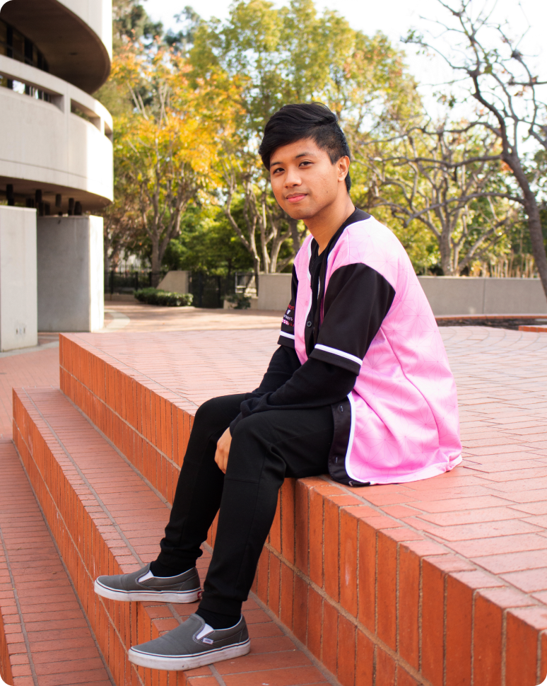
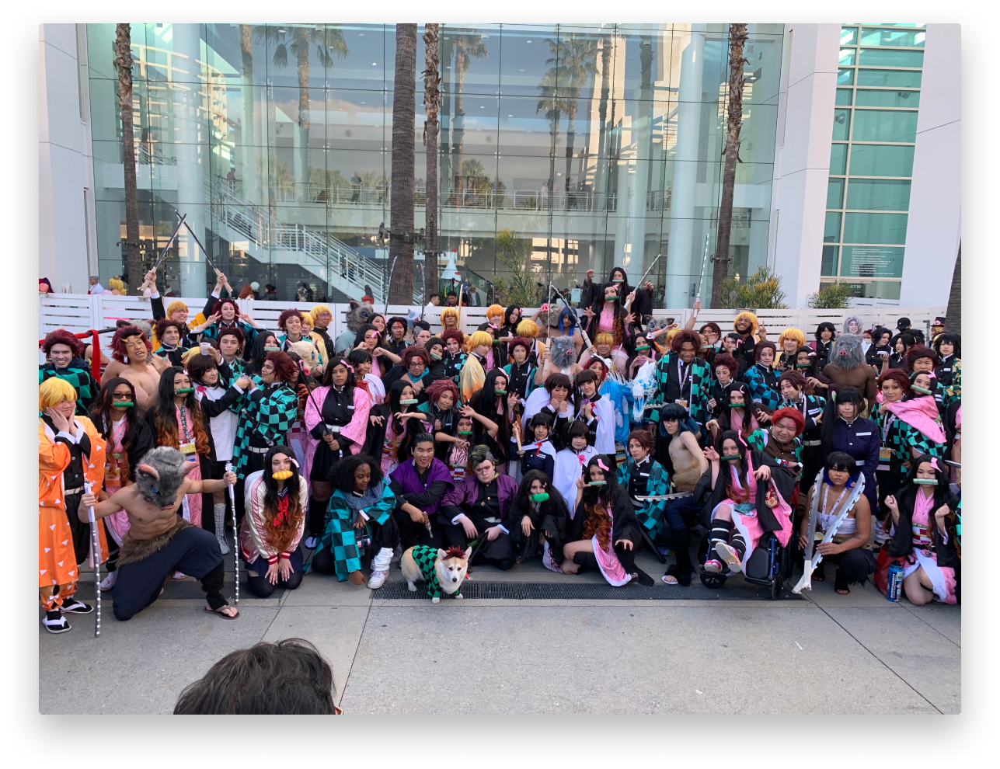
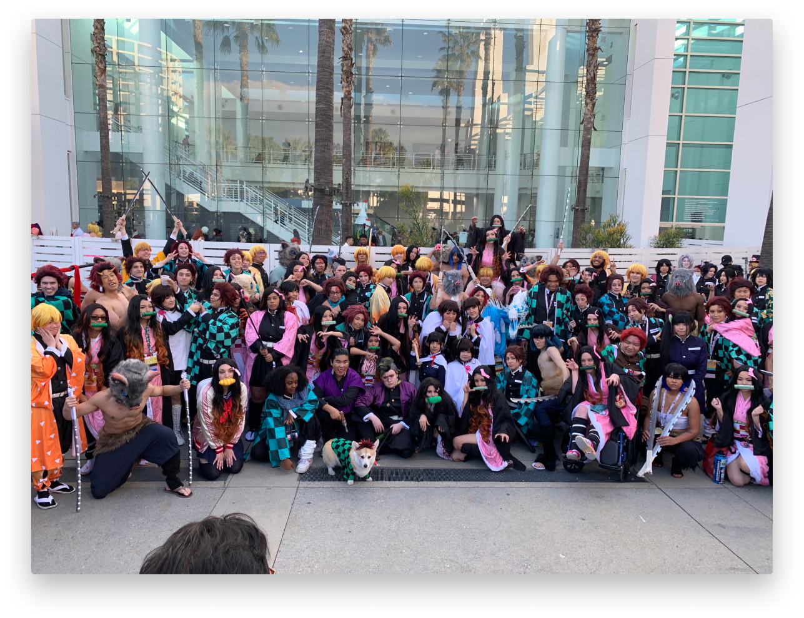

Outside of being a creative I love Anime, music, gaming, and of course, food.

A LITTLE STORY
With an education in Graphic Design and Typography, an opportunity introduced me to the UX industry,
but after learning about the user-centered design process, it made me stay.
When I learned that I can improve people’s lives through design and create a bridge between people and
technology, it made me more determined to break into the UX industry.
Now, I am a Product Designer looking for UX opportunities to help businesses create great user-centered
solutions for their digital products and build a portfolio that I can look back to, knowing that I helped
someone’s business move forward. Only then would I feel accomplished as a visual problem solver.
It’s my goal to have people achieve what they came for through a creative and interactive way and to identify
how a user experience affects business goals.
Whether I am doing solo work or collaborating, I make an effort to be greatly involved in all stages of the UX process:
• Concept creation.
• Competitive analysis.
• User research.
• Paper ideations and wireframing.
• A/B and Usability Testing.
• Visual Design.
• Development hand-off.
• Post product launch usability testing.
Finally, when I’m not working on creative projects, you can find me achieving my ideal physique, behind a computer,
actively learning and growing my skills, while feeding my geeky self through my hobbies of gaming, Anime and music.
TESTIMONIALS
"Ryan designed my portfolio website, and I could not have been happier with how everything turned out.
Out of 200+ designers reached out to me on the project, Ryan and his work immediately stood out. I had no idea
that he was still so early in his career, as his work and his professionalism are far beyond his age.
Ryan was prompt, creative, and very flexible with all of my ideas--even the incoherent ones I couldn't communicate well.
As a backend developer, I was unsure of how to show off my enterprise coding projects; Ryan had the great idea to
write up case studies about each one as a substitute for revealing proprietary source code.
I would recommend Ryan to anyone in need of UI/UX design work. He would make a fantastic addition to any team, and I look
forward to seeing his career unfold (and reaching out to him when I want to redesign my site!)."
Derek Foster, Senior Software Consultant at Red Hat.
 
